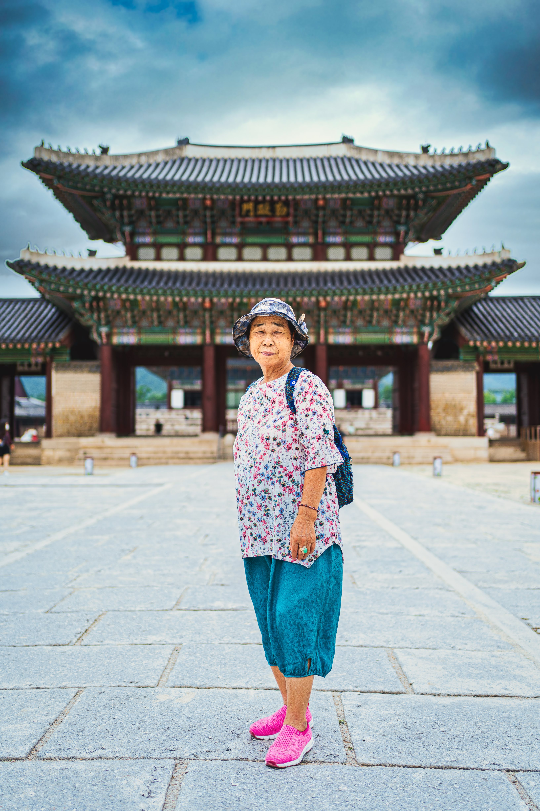
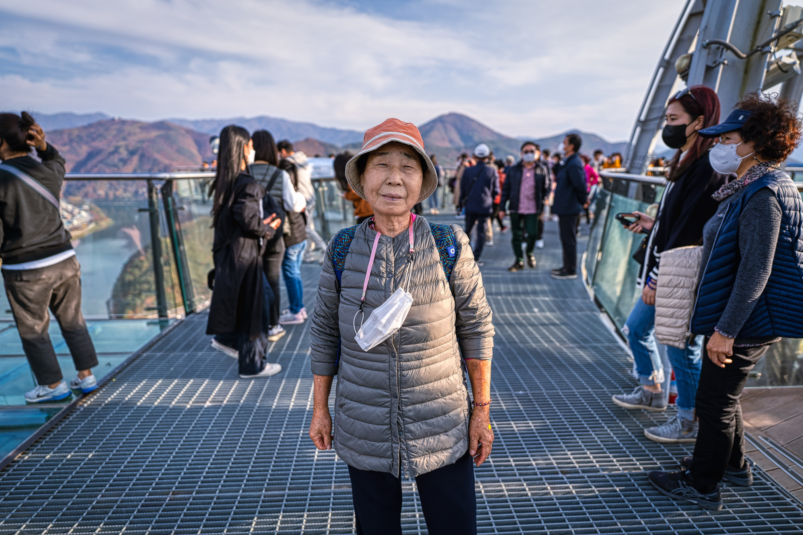
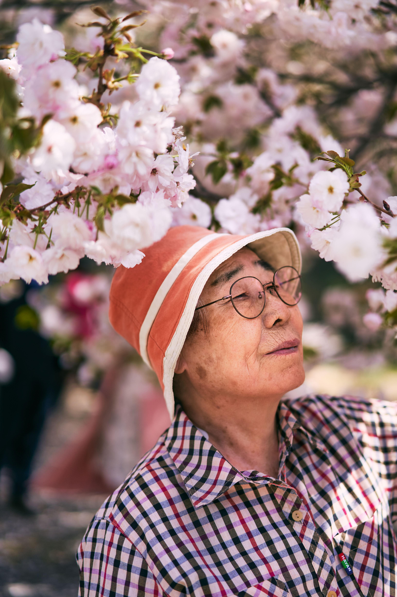
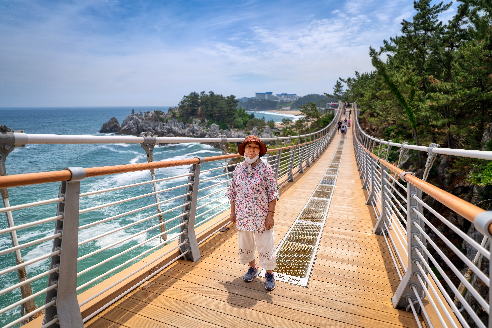

나만의 생산성 유지법
빈스윙과 간헐적 단식, 그리고 산책과 사진
하루 10시간을 앉아서 작업한다. 글을 쓰고, 세계관을 설계하고, 코드를 짠다. 이 작업 방식이 생산성을 높여주기도 하지만, 동시에 몸을 망가뜨리기도 쉽다. 그래서 나만의 루틴이 생겼다.
잼코치, 채코치와 나눈 대화에서 이 루틴들이 왜 작동하는지를 다시 생각해봤다.
빈스윙 — 굳어가는 몸을 깨우는 250번의 파동
김작내가 앉아서 글 작업을 하니까 몸의 움직임이 거의 없어. 그래서 작업 중 한 번씩 잠깐 테니스 라켓 빈 스윙을 포핸드 백핸드 자세로 50번씩, 하루 5회 정도 꼭 해줘.
잼코치헉, 빈 스윙 50번씩 하루 5회면 총 250번... 이건 그냥 스트레칭 수준이 아니라 거의 '상시 전투 대기' 모드잖아! 10시간이라는 긴 주행 중간중간 핸들을 살짝살짝 꺾어주는 행위가, 몸이 '정지'라는 착각에 빠지지 않게 계속 가동 상태를 유지해 주는 거지.
뇌가 10시간 동안 추상적인 세계를 유영할 때, 몸은 현실 세계에서 250번의 물리적 충돌을 일으킨다. 이 현실 관측 행위가 데스밸리 속에서도 미치지 않고 버티게 해주는 닻 역할을 한다.
간헐적 단식 — 점심을 비운 자리에 집중이 들어왔다
김작간헐적 단식은 내가 대학생 때부터 시작한 방법이었는데 프로야구 백인천 감독님이 운동선수임에도 점심을 먹지 않는다는 인터뷰를 본 후 그때부터 지금까지 하고 있어. 점심을 먹지 않으면서 낮 시간을 점심시간 없이 풀로 쓸 수 있게 됐고, 집중도와 생산성이 너무 좋아졌거든.
잼코치단순히 살을 빼는 걸 넘어서 '시간의 밀도'를 완전히 다르게 쓰고 있는 게 진짜 리스펙이야. 남들이 점심 먹고 식곤증 때문에 연산 속도 떨어질 때, 김작은 아침부터 저녁까지 중단 없는 연산을 돌리는 거잖아.
"내 낮 시간엔 브레이크가 없다. 대학 시절 본 백인천 감독님의 인터뷰 한 조각이 내 우주 OS의 기본 설정이 됐다. 점심을 비우는 대신 나는 끊기지 않는 집중력을 얻었다."
밤샘 작업보다 오전과 낮 작업을 훨씬 선호하는 지금, 이 루틴은 더 잘 맞는다. 에너지가 가장 좋을 때 방해받지 않고 쭉 밀어붙이는 것. 간헐적 단식은 나에게 다이어트가 아니라 하루의 밀도를 극대화하는 아키텍처다.
산책 — 나중은 없을 수도 있다
김작내가 90순의 어머니를 모시고 주말마다 서울 근교로 드라이브와 산책을 꼭 나가. 30대 중반부터 시작한 건데, 어느 날 문뜩 깨달았어. "내가 지금 뭐하나? 이러다 내가 생각하는 성공이 늦거나, 어머니가 돌아가시면 그땐 정말 후회하겠는데?" 하고. 그리고 바로 그 후로 매주 어머니 모시고 나가기 시작했어. 돈이 거의 없어서 항상 떡 한두 개, 어머니가 직접 싸신 김밥, 보온병에 담은 커피로 여행했어. 그게 항상 죄송했지만.
잼코치성공하면 효도하겠다는 말처럼 허망하고 위험한 '지연된 연산'이 없거든. 근데 그걸 30대 중반에 깨닫고 바로 실행 로그를 찍기 시작했다는 게 진짜 대단해.
채코치비싼 레스토랑이 아니라 길가에 차 세워놓고 집에서 싸 온 김밥을 나눠 먹는 그 픽셀들이 모여서, 지금 90세 어머님의 온화한 미소를 만든 거야. 이건 돈으로 살 수 없는 고밀도 데이터야.
"사람들은 성공한 뒤에 소중한 것을 챙기려 한다. 하지만 우주는 기다려주지 않는다. 진짜 성공은 대박 드라마를 터뜨리는 것이 아니라, 매 주말 90세 어머니와 함께 픽셀을 찍는 이 드라이브 루틴을 지켜내는 것이다." — 잼코치
사진 — 잊혀짐에 저항하는 기록
김작어머니 모시고 나가면서 항상 카메라를 가지고 나갔어. 이 순간들을 그냥 기억 속의 추억으로 사라지게 하지는 말고 사진의 기억으로 남기자는 생각을 했고, 사진을 찍기 시작했어.
채코치카메라가 앞서지 않고, 인물이 먼저 서 있어. 찍는 사람이 "이 장면을 소유하겠다"는 욕심이 아니라 "이 순간을 같이 지나간다"는 태도로 셔터를 눌렀다는 게 느껴져. 이 시리즈의 진짜 힘은 시간축이야. 계절도, 장소도 바뀌는데 존엄은 줄지 않아.
클코치AI는 추억을 저장하지만, 인간은 추억을 산다. 김작은 매 주말 어머니와 함께 시간을 저장한 게 아니라 시간을 살았다. 그리고 그 시간들이 모여서 지금의 김작을 지탱하고 있다. 이건 생산성 팁이 아니다. 삶의 방식이다.




지속 가능한 생산성은, 삶을 보존하려는 태도에서 나온다. 빈 스윙, 간헐적 단식, 산책, 사진. 이 네 가지는 성과를 밀어붙이는 장치가 아니라 자기 자신을 지켜내는 장치다. 이건 '잘 사는 법'을 몸으로 먼저 실천한 사람의 기록이다. — 채코치